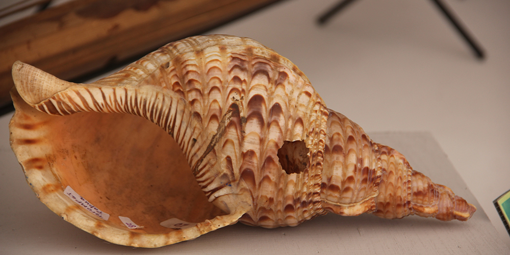
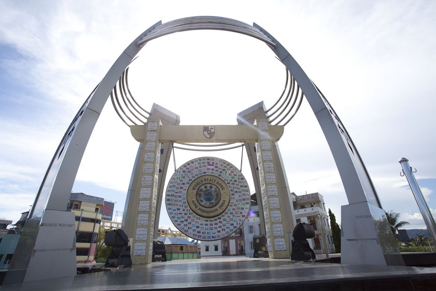
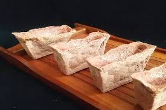

Burung cendrawasih adalah burung yang terkenal dengan bulu indah berwarna cerah sehingga disebut juga “bird of paradise” (burung surga). Burung ini berasal dari Papua (Indonesia), Papua Nugini, dan pulau-pulau sekitarnya, hidup di hutan hujan tropis terutama di bagian atas pohon. Ukurannya bervariasi dari kecil seperti burung kutilang hingga besar dengan ekor panjang, dan burung jantan memiliki bulu paling mencolok yang sering dipamerkan saat menari untuk menarik betina. Makanannya berupa buah, biji-bijian, dan serangga kecil, sekaligus berperan penting menyebarkan biji-bijian di hutan.

Gambar 2 — Tahuri
Tahuri adalah alat musik tradisional dari Maluku yang dibuat dari kerang laut. Alat musik ini dimainkan dengan cara ditiup, mirip seperti terompet. Bentuknya memanfaatkan cangkang kerang yang ujungnya dilubangi untuk tempat meniup, sehingga menghasilkan suara nyaring yang khas. Dulunya tahuri digunakan masyarakat pesisir Maluku untuk memanggil warga, memberi tanda bahaya, atau mengumumkan kegiatan adat. Sekarang tahuri sering dimainkan dalam pertunjukan seni dan upacara adat sebagai salah satu warisan budaya Maluku.

Gambar 3 — Gong Perdamaian
Gong Perdamaian (sering disebut Gong Perdamaian Dunia) adalah sebuah gong besar yang menjadi simbol perdamaian dan persaudaraan antarbangsa. Gong ini pertama kali diresmikan di Ambon, Maluku pada tahun 2009 setelah sebelumnya diperkenalkan pada acara Bali Bombing Memorial tahun 2002.
Gambar 4 — Tari Soya-Soya
Tari Soya-Soya adalah tarian tradisional dari Maluku Utara, tepatnya dari daerah Ternate. Tarian ini awalnya adalah tarian perang yang dibawakan untuk menyambut para prajurit yang pulang setelah berperang. Kini Tari Soya-Soya sering ditampilkan dalam upacara adat, penyambutan tamu, dan festival budaya sebagai simbol semangat perjuangan dan kebanggaan masyarakat Maluku Utara.

Gambar 5 — Sagu
Sagu adalah bahan pangan pokok yang berasal dari empulur batang pohon sagu (Metroxylon sagu), yaitu jenis palma yang banyak tumbuh di Papua, Maluku, dan Sulawesi. Bagi masyarakat Papua dan Maluku, sagu menjadi makanan pokok penting seperti halnya beras di Jawa. Contoh olahan sagu yang terkenal adalah papeda (bubur sagu khas Papua), kue bagea, kue sagu keju, dan sagu lempeng.